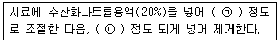
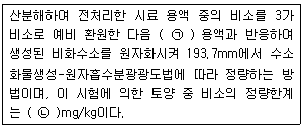
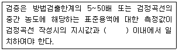
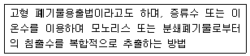
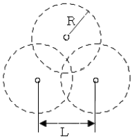
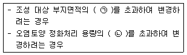
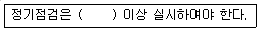
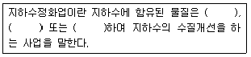

토양환경기사 (2018-09-15 기출문제)
1과목: 토양학개론
1. 자연토양의 양이온교환용량이 Ca2+ : 40cmole/kg, Mg2+ : 25cmole/kg, K+ : 20cmole/kg, Na+ : 10cmole/kg, H+ : 15cmole/kg, Al3+ : 20cmole/kg일 때 이 토양의 염기포화도(%)는?
- 11.5
- 26.9
- 73.1
- 95.0
(정답률: 80%)

2. 관정의 직경이 50cm, 수심이 10m인 경우 일정한 유량으로 양정을 할 경우 관정의 수위가 일정시간 경과 후 4m에 도달하였다. 이 때의 관정 유량(m3/sec)은? (단, 관정은 자유수면에 위치, 투수계수=0.1cm/sec, 영향반경 = 1000m)
- 0.023
- 0.032
- 0.048
- 0.064
(정답률: 60%)
3. 오염된 대수층의 임자비중이 2.65이고 공극률이 0.3이라면 용적비중(g/cm3)은?
- 0.79
- 0.92
- 1.86
- 7.38
(정답률: 79%)
4. 토양유기물질에 대한 설명으로 맞는 것은?
- 부식산은 염기와 산에 용해된다.
- 부식은 산과 알카리에 모두 용해된다.
- 펄빅산은 염기에 용해되고 산에 침전된다.
- 펄빅산은 부식산에 비해 산소나 유황의 함유량이 많고 탄소, 수소, 질소의 함량은 적다.
(정답률: 49%)
5. 지하수의 수리전도도가 2.0×10-3cm/sec이고, 공극비(e : void ratio)가 0.25일 때 지하수의 평균선형유속(cm/sec)은? (단, 동수구배=0.001, Darcuy의 법칙 적용)
- 1.0×10-5
- 5.0×10-5
- 5.0×10-7
- 8.0×10-7
(정답률: 41%)
6. 일반적 유기오염물질의; 주요 특성으로 가장 거리가 먼 것은?
- 증기압
- 용해도적
- 분해상수
- 옥탄올/물 분배계수
(정답률: 85%)
7. 토양층위 중 A증에 대한 설명으로 옳은 것은? (단, 성토층 내 용탈층)
- 유기물의 원형을 식별할 수 있는 유기물 층이다.
- 광물질이 풍부하며 하부에 있는 층보다 색깔이 짙은 것이 특징이다.
- 풍화작용이 가장 활발하게 진행되고 있는 층이다.
- 토양의 구조가 뚜렷하게 구분되는 것이 특징이다.
(정답률: 71%)
8. 토양증기추출법(SVE)시스템의 장점에 해당하지 않는 것은?
- 비교적 기계 및 장치가 간단하다.
- 유지 및 관리비가 적다.
- 증기압이 낮은 물질에 제거효율이 높다.
- 생물학적 처리효율을 높여준다.
(정답률: 74%)
9. 토양미생물을 크기에 따라 구분할 때 일반적으로 가장 큰 미생물에 해당하는 것은?
- 박테리아(bacteria)
- 토양조류(soil algae)
- 원생동물(protozoa)
- 곰팡이(fungi)
(정답률: 70%)
10. 전지구적인 물 분포 부피비를 크기 순서대로 나열한 것은?
- 빙하, 만년설＞지하수(지하 약 4km)강＞토양수분
- 지하수(지하 약 4km)＞빙하, 만년설＞토양수분＞강
- 지하수(지하 약 4km)＞빙하, 만년설＞강＞토양수분
- 빙하, 만년설＞지하수(지하 약 4km)＞토양수분＞강
(정답률: 80%)
11. 물기가 있는 토양은 외부의 힘을 가하여 형체를 변형시키면 힘을 제거해도 변형된 그대로의 모양을 유지하는데, 이러한 토양의 성질은?
- 토양 공극성
- 토양 가소성
- 토양 흡수성
- 토양 복원성
(정답률: 86%)
12. 나트륨토양 개량방법으로 틀린 것은?
- 지하수위가 높은 경우에는 배수에 의하여 수위를 낮춘다.
- 석회 자재를 투입하여 치환성 Ca 포화도를 높인다.
- 제염 관개로 NaOH, NaHCO3, Na2CO3를 상층토로 이동시킨다.
- 내알칼리, 내침수성 식물을 재배하여 유기질 잔사를 포장으로 환원시킨다.
(정답률: 77%)
13. 농약에 의한 지하수오염 가능성이 높은 지역은?
- 지하수면이 깊은 지역
- 농약이동경로에 다량의 점토가 분포하는 지역
- 주변 지하수 이용시설이 농약살포지 하류구배구간에 위치하는 곳
- 농약살포지와 지하수 이용시설 간의 거리가 원거리인 경우
(정답률: 83%)
14. 토양 내 방선균에 관한 설명으로 옳지 않는 것은?
- 형태는 사상균과 비슷하지만 세포 내 구조는 세균과 비슷하다.
- 산성 환경에서 생육이 활발하여 산성 토양에서 중요한 분해 작용을 담당하고 있다.
- 흙 냄새는 방선균인 Actinomyces oderifer가 분비하는 geosmins과 같은 물질에 의한 것이다.
- 대부분인 산소를 요구하는 호기성균으로 과습한 곳에서는 잘 자라지 않는다.
(정답률: 69%)
15. 휴ㆍ폐금속광산 주변 하천에서 철의 산화에 의하여 적갈색 침전이 나타나는 현상은?
- 블루베이비 침전 현상
- 옐로우보이 침전 현상
- 백화 현상
- 환원 현상
(정답률: 80%)
16. 토양교질(Soil Colloids)에 대한 설명으로 적합하지 않은 것은?
- 분산성의 크기가 1~2μm인 것을 의미한다.
- 미사에 비하여 높은 비표면적을 가지고 있다.
- 교질함량이 증가할수록 양이온교환용량이 증가한다.
- 표면전하량이 낮아 교질함량이 증가하면 수분보유능도 낮아진다.
(정답률: 71%)
17. 토양환경보전법에서 지정한 토양오염물질이 아닌 것은?
- 비소 및 그 화합물
- MTBE
- 트리클로로에틸렌
- 유기인화합물
(정답률: 72%)
18. 토양 산성화의 원인이 아닌 것은?
- 기후와 토양 반응
- 과다방목으로 인한 토양 사막화
- 비료에 의한 산성화
- 부식에 의한 산성화
(정답률: 68%)
19. 중금속으로 오염된 토양에 대한 대책 중 적합하지 않은 것은?
- 석회질 자재를 투여하여 토양의 pH를 중금속을 수산화물로 침전
- 인산비료 투여를 줄여 토양 산성화에 따른 난용성의 인산염 생성을 억제
- 토염된 토양을 깍아 내고 그 위에 객토
- 토양 중 중금속을 특이적으로 흡수, 농축하는 식물을 이용하여 제거
(정답률: 63%)
20. 토양점토광은 vermiculite에 대한 설명으로 틀린 것은?
- 주로 운모류 광물의 풍화로 생성된 토양에 많이 존재한다.
- 운모와 매우 유사한 2:1의 층상구조를 가진다.
- kaolinite와 같이 용액 중에서 결정화 과정을 거쳐 생성된다.
- 일부 팽창이 가능한 광물이다.
(정답률: 68%)
2과목: 토양 및 지하수 오염조사기술
21. 원자흡수분광광도법에 대한 설명으로 틀린 것은?
- 일반적으로 광원부, 시료원자부, 파장선택부 및 측광부로 구성된다.
- 원자흡수분광광도계에 불꽃을 만들기 위해 조연성 가스와 가연성 기체를 사용하는데, 일반적으로 가연성가스로 아세틸렌을, 조연성가스로 공기를 사용한다.
- 원자흡수분광광도계에 사용하는 광원으로 좁은 선폭과 높은 휘도를 갖는 스펙트럼을 방사하는 불꽃이온화검출기(FID)를 사용한다.
- 어떠한 종류의 불꽃이라도 가연성의 가스와 조연성 가스의 혼합비는 감도에 크게 영향을 주므로 금속의 종류에 따라 최적혼합비를 선택하여 사용한다.
(정답률: 67%)
22. 저장물질이 있는 누출검사 대상시설-기상부의 시험법인 미가압법 측정방법에 관한 설명으로 틀린 것은?
- 가압 후 15분 이상 유지시간을 두어 안정시키고 그 이후 15분 동안의 입력강하를 측정한다.
- 가압 중에 노출되어 있는 배관접속부 등에 비눗물 등을 뿌려 누출여부를 확인하여야 한다.
- 가압속도는 누출검사대상시설 공간용적 1m3당 1분 이상이 되도록 가압시간을 조정한다.
- 누출검사대상시설 내 기상부 높이가 200mm이상 인가를 확인한 후 가압한다.
(정답률: 75%)
23. 토양정밀조사결과를 오염등급에 따라 4등급(Ⅰ, Ⅱ, Ⅲ, Ⅳ)으로 구분하는 경우, ‘토양오염재책기준 초과지역’의 등급기준을 나타내는 색은?
- 빨강색
- 청색
- 노란색
- 검정색
(정답률: 87%)
24. pH 4.5인 수용액의 수소이온농도(mol/L)는?
- 3.2×10-5
- 3.2×10-4
- 3.2×10-3
- 3.2×10-2
(정답률: 66%)
25. 누출검사대상시설의 설명으로 틀린 것은?
- “부속배관”이라 함은 누출검사대상시설에 용접 또는 나사조임방식으로 직접 연결되는 배관을 말한다.
- “지하매설배관”이라 함은 부속배관의 경로 중 지하에 매설되어 누출여부를 육안으로 직접 확인할 수 없는 배관을 말한다.
- “배관접속부”라 함은 누출검사대상시설과 부속배관, 부속배관과 배관을 연결하기 위하여 용접집한 또는 나사조임방식 등으로 접속한 부분을 말한다.
- “누출검지관”이라 함은 가스의 누출여부를 누출검사대상시설 내부에서 직접 또는 간접적으로 확인하기 위해 설치된 관을 말한다.
(정답률: 87%)
26. 페놀류 및 페놀류-기체크로마토그래피에 대한 설명으로 틀린 것은?
- 페놀류는 방부제, 소독제 등으로 쓰이며, 피크린산의 약염료 등의 제조 원료로 사용되고 화학공장과 석탄가스공장, 코크스제조공장의 폐수 중에 함유될 수 있다.
- 페놀류는 피부와 접촉되면 발진이 생기고 체내에서는 소화기나 신경게통에 장애를 일으킨다. 상수에 유입될 경우 염소와 반응하여 독성이 보다 높은 클로로페놀이 형성되며, 미량이 존재하더라도 악취가 심한 것이 특징이다.
- 페놀류-기체크로마토그래피는 토양 중 페놀 및 펜타클로로테놀을 아세톤/노말헥산(1:1)으로 추출하여 기체크로마토그래피로 정량하는 방법이다. 정량한계는 페놀이 0.02mg/kg, 펜타클로로페놀이 0.1mg/kg이다.
- 페놀류-기체크로마토그래피 시험기준으로 분석할 경우, 페놀류 분석을 위해 특별히 고안된 분석방법이므로 간섭물질이 있을 수 없다.
(정답률: 71%)
27. 토양오염도를 측정하기 위한 시료의 조제 시 눈금간격 0.075mm의 표준체(200 메쉬)로 체거름하여 조제하는 시료는?
- 비소
- 카드뮴
- 니켈
- 불소
(정답률: 76%)
28. 6가크롬(자외선/가시선 분광법) 측정 시 잔류염소가 시료에 공존하여 발색을 방해할 때 조치내용으로 ()에 옳은 것은?:

- ㉠ pH12, ㉡ 피로인산나트륨을 5mL
- ㉠ pH12, ㉡ 입상활성탄을 10%
- ㉠ pH10, ㉡ 아스코르빈산나트륨을 5mL
- ㉠ pH10, ㉡ 아비산나트륨을 2%
(정답률: 50%)
29. 저장물질이 있는 누출검사대상 시설의 경우 액상부의 시험법에 의한 측정 시 측정오류의 원인으로 틀린 것은?
- 측정 중 충격 및 진동에 의한 액면의 변동
- 측정시간이 지나치게 짧을 때
- 측정 중 과도한 온도 변화에 의한 유류의 색상변화
- 액량변화를 감지하는 기구가 적정한 위치에 있지 않을 때
(정답률: 47%)
30. 농경지 또는 기차지역의 구분에 관계없이 대상지역을 대표할 수 있는 1개 지점 또는 오염의 개연성이 높은 1개 지점을 선정하여 시험용 시료를 채취하는 물질이 아닌 것은?
- 유기인화합물
- 시안
- 페놀류
- 6가 크롬
(정답률: 57%)
31. 금속류를 원자흡수분광광도법으로 특정 시 정확도에 관한 내용으로 가장 적합한 것은?
- 정확도는 첨가한 표준물질의 농도에 대한 측정 평균값의 상대 백분율로서 나타내고 그 값이 70~130% 이내이어야 한다.
- 정확도는 첨가한 표준물질의 농도에 대한 측정 평균값의 상대 백분율로서 나타내고 그 값이 75~125% 이내이어야 한다.
- 정확도는 측정값의 상대표준편차를 산출하며 그 값이 25% 이내이어야 한다.
- 정확도는 측정값의 상대표준편차를 산출하며 그 값이 30% 이내이어야 한다.
(정답률: 69%)
32. 다음 중 온도에 대한 규정 중 틀린 것은?
- 표준온도는 0℃
- 상온은 15~25℃
- 실온은 10~30℃
- 찬 곳을 따로 규정이 없는 한 0~15℃의 곳
(정답률: 75%)
33. 트랩 기체크로마토그래피로 BTEX를 정량하는 방법에 대한 설명으로 틀린 것은?
- 검출기는 불꽃이온검출기(FID), 관이온화검출기(PID) 또는 GC/MS를 사용한다.
- 시료도입부 온도는 150~250℃이다.
- 트랩은 Tenax, Carbopack, OV-1/Tenax/Silicagel/Charcoal 또는 동등 이상 성능을 가진 것을 사용한다.
- BTEX의 유효측정농도는 0.⑤ mg/kg 이상으로 한다.
(정답률: 49%)
34. 다음 용어에 대한 설명으로 옳지 않은 것은?
- 가스체의 농도는 표준상태(0℃, 1기압, 상대습도(0%)로 환산 표시한다.
- 방울수라 함은 20℃에서 정제수 20방울을 적하할 때, 그 부피가 약 1mL가 되는 것을 뜻한다.
- 진공(감압)이라 함은 따로 규정이 없는 한 15mmH2O 이하를 말한다.
- “약”이라 함은 기재된 양에 대하여 ±10% 이상의 차가 있어서는 안된다.
(정답률: 86%)
35. 비소-수소화물생성-원자흡수분광광도법에 관한 설명으로 ()에 알맞은 것은?

- ㉠ 수소화주석나트륨, ㉡ 0.1
- ㉠ 수소화붕소나트륨, ㉡ 0.1
- ㉠ 수소화주석나트륨, ㉡ 0.01
- ㉠ 수소화붕소나트륨, ㉡ 0.01
(정답률: 66%)
36. 정도보증/정도관리에 관한 내용 중 검정곡선의 장성 및 검증에 관한 사항으로 ()에 옳은 것은?

- 5%
- 10%
- 15%
- 25%
(정답률: 77%)
37. 토양의 수분함량 측정에 관한 설명으로 틀린 것은?
- 시료를 100~110℃에서 2시간 이상 건조하고 데시케이터에서 식힌 후 항량으로하고 무게를 정확히 단다.
- 토양 중 수분을 0.1%까지 측정한다.
- 시료는 24시간 이내에 증발처리를 하여야하며 최대한 7일을 넘기지 말아야 한다.
- 시료를 보관하여야 할 경우 미생물의 의한 분해를 방지하기 위하여 0~4℃로 보관한다.
(정답률: 88%)
38. 액체시약의 농도에 있어서 질산(1+2)I라고 되어있을 때 물 10mL를 사용하려면 질산은 몇 mL를 혼합하여야 하는가?
- 1
- 2
- 5
- 10
(정답률: 77%)
39. 유기인을 기체크로마토그래피법으로 측정할 경우 기체크로마토그래피의 구성 기기별 온도 조건이 맞게 연결된 것은?
- 시료주입구 온도 : 150℃
- 칼럼온도 : 100℃
- 검출기 온도 : 280℃
- 오븐 최종온도 : 170℃
(정답률: 57%)
40. 토양시료의 수분측정결과 다음과 같을 때 수분함량(%)은? (단, 증발접시의 무게(W1)=30.257g, 건조 전 증발접시화 시료의 무게(W2)=52.498g 건조 후 증발접시와 시료의 무게(W3)=45.521g)
- 31.4
- 34.6
- 37.2
- 39.4
(정답률: 85%)
3과목: 토양 및 지하수 오염정화 기술
41. 지하수와 오염물질들의 수평이동을 제어하기 위해서 지주에 설치하는 수직차단벽(vertical cutoff walls)에 대한 설명으로 옳은 것은?
- 슬러리월(slurry walls)은 주변보다 높은 수리전도도를 가진 물질을 이용하여 오염물질의 이동을 촉진 시키는 방법이다.
- 수직차단벽은 주변 지하 매질과 수직차단벽의 수리전도도 차이가 적을수록 차단 효과가 높다.
- 슬러리월(slurry walls)은 오염되지 않은 지하수를 오염된 지역으로부터 격리시키는데 사용될 수 있다.
- 슬러리월(slurry walls)은 지하로의 침출수 흐름을 제어할 수 있으나 오염물질의 분해 또는 지체효과를 증진 시킬 수는 없다.
(정답률: 66%)
42. 다음 설명에 해당하는 용출능 평기시험은?

- MWEP 시험법
- MCC-IP 시험법
- CLT 시험법
- EP 시험법
(정답률: 73%)
43. 고농도의 윤활유로 오염된 지역에 가장 적합한 정화기술은?
- 토양세정법
- 토양증기추출법
- 열탈착법
- 퇴비화법
(정답률: 67%)
44. 저온열탈착법에 대한 설명으로 가장 거리가 먼 것은?
- 대부분의 석유계화합물질에 적용이 가능하다.
- 카드뮴이나 수은 등을 비롯한 거의 모든 중금속 정화에 효과가 탁월하다.
- 타기술에 비해 높은 에너지 비용이 단점이다.
- 처리효율이 높고 적용범위가 넓다.
(정답률: 79%)
45. 영향반경(R) 간의 빈 공간이 없어 토양증기추출정을 영향반경 5m 의 정삼각형 배열로 배치하고자 한다. 영향반경의 중첩을 최소화 할 수 있는 추출정 사이의 직선거리(L, m)는?

- 약 4.33
- 약 5.00
- 약 8.66
- 약 10.00
(정답률: 63%)
46. 생물학적 통풍법에 대한 설명으로 틀린 것은?
- 소요 장비의 조달이 용이하며 설치가 간단하다.
- 공기분산법이나 지하수양수처리법 등의 정화기술과 조합이 가능하다.
- 건물하부와 같은 접근이 불가능한 곳은 적용이 어렵다.
- 매우 낮은 농도까지 처리가 어렵다.
(정답률: 71%)
47. 미생물 중에서 NO2를 NO3로 산화시키는 질산화 미생물로 가장 옳은 것은?
- Nitrosomonas
- Nitrobacter
- Rhodopseudomonas
- Thiobacillus
(정답률: 78%)
48. 유류로 오염된 토양에서 쉽게 발견할 수 있는 유기물 분해 미생물이 아닌 것은?
- Pseudomonas putids
- Phanerochaete chrysosporium
- Achromobacter sp
- Cyanophyta
(정답률: 44%)
49. 토양오염정화 중 열탈착 기술에 관한 설명으로 옳지 않은 것은?
- 탈착속도는 유기물질의 화학적 구성에 큰 영향을 받으며 대개 분자량이 클수록 빠르다.
- 휘발성 유기화합물(VOCs)뿐만 아니라 준휘발성 유기화합물(SVOCs)의 제거도 가능하다.
- 유기염소 및 유기인 살충제 처리 시 푸란과 다이옥신류를 생성하지 않는다.
- 열탈착 공정에서 발생하는 가스량은 같은 용량의 소각공정에 비해 상대적으로 적다.
(정답률: 79%)
50. Soil Flushing에 관한 설명으로 옳지 않은 것은?
- 휘발성 유기화합물질, 준휘발성 유기화합물질 처리 시에는 경제성이 떨어진다.
- 세정용액에 의해 2차 오염이 유발될 수 있다.
- 투수성이 낮은 토양에서는 처리하기가 어렵다.
- 중금속 오염토양처리에는 효과가 없다.
(정답률: 75%)
51. 오염지하수를 반응벽체공법으로 처리할 때 반응벽체의 두께는 2.4m, 지하수의 선속도가 0.2m/hr일 경우 반응벽체 통과시간(day)은?
- 0.5
- 1
- 1.5
- 2
(정답률: 42%)
52. 바이오벤팅공정에서 주입되는 공기유량이 100m3/day이며 초기 주입 산소농도가 21%이었다. 이 오염부지의 평균산소소모율이 30%/day일 경우 배가스 중의 산소농도(%)는? (단, 토양체적=50m3, 토양공극률=0.5)
- 7.5
- 9.5
- 11.5
- 13.5
(정답률: 56%)
53. 오염토양의 불용화를 위해 화학적 처리를 하고자 할 때 오염물질과 그 처리에 사용되는 물질에 대한 연결로 가장 적합한 것은?
- 시안화합물-차아염소산나트륨(NaOCl)
- 6가 크롬-염화철(FeCl2)
- 비소화합물-황산화철(FeSO4)
- 수은화합물-황산나트륨(Na2SO4)
(정답률: 64%)
54. 바이오벤팅(Bioventiong)기법 적용 시의 영향인자에 관한 설명으로 가장 거리가 먼 것은?
- 오염물질특성 : 적용되는 오염물질은 휘발성 및 생분해성을 가지고 있어야 한다.
- 토양의 투수성 : 공기를 토양 내에 강제 순환시킬 때 매우 중요한 영향 인자이다.
- 중금속 처리농도 : 미생물 활성을 유지하기 위한 중요한 인자이다.
- 토양 함수율 : 공기흐름 속도는 공기가 채워진 토양공극률에 비례한다.
(정답률: 69%)
55. 식물복원공정(Phytoremediation)의 원리에 대한 설명으로 틀린 것은?
- 식물추출(Phytoremediation) : 오염물질을 식물체 내로 흡수, 농축시킨 후 식물체를 제거하는 방법
- 식물안정화(Phytostabilization) : 오염물질이 뿌리 주변에 비활성의 상태로 축적되거나 식물체에 의하여 이동ㆍ차단되는 원리를 이용한 방법
- 식물휘발화(Phytitovolatilization) : 오염물질이 식물체에 의하여 흡수, 대사되어 휘발성 산물로 변형 후 대기로 방출되는 것을 이용한 방법
- 근권분해(Rhizodegradation) : 수용성 오염물질이 생물 또는 비생물적인 과정에 의하여 뿌리 주변에 축적되거나 식물체로 흡수되는 것을 이용하는 방법
(정답률: 50%)
56. 토양정화에서 자연저감(Natural attenuation)이 일어나고 있다면 생분해 지표로서 배경보다 높은 값을 나타내는 것은?
- 질산염
- 황산염
- 산화화원포텐셜
- 염소
(정답률: 39%)
57. 1, 1, 1-TCE는 지주에서 분해되며, 반감기가 120일이다. 오염물질의 분해 반응속도가 1차반응이라고 가정할 때, 초기오염농도의 90%가 제거되는 데 소요되는 기간(day)은?
- 약 348
- 약 357
- 약 384
- 약 399
(정답률: 59%)
58. 동전기정화기술에서 양극에서 발생되는 현상으로 토양 내의 중금속을 탈착시키는데 기여하는 물질이 생성되는 현상은?
- 2H2O-4e-→O2↑+4H+
- 2H2Oo-2e-→O2↑+2H+
- H2O-4e-→O2↑+4H+
- 2H2O-4e-→H↑+4OH-
(정답률: 74%)
59. 토양세척공법에 관한 설명으로 가장 거리가 먼 것은?
- 비교적 다양한 오염 토양 농도에 적용 가능하다.
- 미세 토양입자 분리를 위해 응집제 첨가가 필요할 수 있다.
- 토양 내에 고농도 휴믹물질이 존재 시 토양세척 처리 효율이 높게 나타날 수 있다.
- 토양 분리 장치로서 회전 스크린, 교반기, 진동장치 등이 필요하다.
(정답률: 75%)
60. 자연저감기법(Natual Attenuation)의 영향인자 중 수리 지질학적 인자와 가장 거리가 먼 것은?
- 동수 구배
- 토양입경의 분포
- 오염물질의 농도
- 지표수와 지하수의 관계
(정답률: 49%)
4과목: 토양 및 지하수 환경관계법규
61. 토양정화업은 누구에게 등록해야 하는가?
- 대통령
- 국무총리
- 환경부장관
- 시ㆍ도지사
(정답률: 55%)
62. 토양관련전문기관 중 토양오염조사기관의 업무가 아닌 것은?
- 토양오염도검사
- 토양정밀조사
- 토양환경평가
- 오염토양 개선사업의 지도ㆍ감독
(정답률: 58%)
63. 토양관련전문기관이 토양오염검사신청서를 받은 때 하는 검사 및 분석에 대한 설명으로 올바른 것은?
- 검사신청서를 받은 날부터 7일 이내에 이ㆍ화학적 분석
- 검사신청서를 받은 날부터 7일 이내에 시료채취 또는 누출검사
- 특별한 사유가 없는 한 시료채취일부터 7일 이내에 이ㆍ화학적 분석
- 특별한 사유가 없는 한 시료채취일부터 7일 이내에 시료채취 또는 누출검사
(정답률: 63%)
64. 환경부장관 또는 시장ㆍ군수ㆍ구청장이 지하수를 현저하게 오염시킬 우려가 있는 시설의 설치자 또는 관리자에게 지하수오염방지를 위하여 명할 수 있는 조치가 아닌 것은?
- 오염된 지하수의 정화
- 지하수 오염 관측정의 설치 및 수질측정
- 지하수오염물질 누출방지시설의 설치
- 지하수영향조사 실시
(정답률: 50%)
65. 토양관리단지 조성계획 중 대통령령으로 정하는 중요한 사항을 변경하는 경우에 해당하는 내용으로 ()에 옳은 것은?

- ㉠ 20%, ㉡ 20%
- ㉠ 20%, ㉡ 30%
- ㉠ 30%, ㉡ 20%
- ㉠ 30%, ㉡ 30%
(정답률: 67%)
66. 정화책임자가 둘 이상인 경우 다음 중에서 정화책임의 가장 후순위를 가지는 자는?
- 정화책임자 중 토양오염관리대상시설의 소유자와 그 소유자의 권리ㆍ의무를 포괄적으로 승계한 자
- 정화책임자 중 토양오염이 발생한 토지를 소유하였던 자
- 정화책임자 중 토양오염이 발생한 토지를 현재 소유 또는 점유하고 있는 자
- 정화책임자 중 토양오염관리대상시설의 점유자 또는 운영자와 그 점유자 또는 운영자의 권리ㆍ의무를 포괄적으로 승계한 자
(정답률: 73%)
67. 토양오염방지시설의 권장 설치ㆍ유지ㆍ관리 기준에 관한 내용으로 ()에 옳은 내용은?

- 매주 1회
- 매월 1회
- 매 분기 1회
- 매년 1회
(정답률: 53%)
68. 지하수에 관한 조사업무를 대행할 수 있는 지하수 관련조사전문기관으로 틀린 것은?
- 한국수자원공사
- 한국광물자원공사
- 한국환경산업기술원
- 한국환경공단
(정답률: 63%)
69. 토양관련전문기관의 결격사유가 아닌 것은?
- 피성년후견인 또는 피한정후견인
- 파산선고를 받고 복권되지 아니한 자
- 지정이 취소된 후 2년이 지나지 아니한 자
- 토양환경보전법을 위반하여 구류 이상의 형을 선고받고 그 집행이 종료된 날로부터 2년이 경과되지 아니한 자
(정답률: 53%)
70. 토양관련기관 또는 토양정화업 기술인력의 교육에 대한 설명으로 틀린 것은?
- 신규교육은 토양관련전문기관 또는 토양정화업 분야의 기술인력으로 최초로 종사한 날부터 1년 이내에 18시간을 이수하여야 한다.
- 보수교육은 신규교육을 받은 날을 기준으로 5년마다 8시간 이수하여야 한다.
- 교육은 집합교육 또는 원격교육으로 한다.
- 원격교육은 최근 2년간 토양관련 법령을 위반한 사실이 없는 기술인력에 한하여 설치할 수 있다.
(정답률: 52%)
71. 시ㆍ도지사는 토양오염실태조사결과보고서를 언제까지 환경부 장관에게 제출 하는가?
- 다음 연도 1월 31일까지
- 다음 연도 2월 28일까지
- 매년 9월 30일까지
- 매년 12월 31일까지
(정답률: 82%)
72. 토양오염대책기준으로 옳은 것은? (단, 1지역 기준, 단위 : mg/kg)
- 구리 450
- 아연 600
- 불소 400
- 카드뮴 30
(정답률: 35%)
73. 토양관련전문기관인 토양오염조사기관의 지정기준(기술인력)으로 옳지 않은 것은?
- 박사는 해당 분야 기사 자격취득 후 토양관련 분야 또는 해당 전문기술 분야에서 5년이상 종사한 사람으로 대체할 수 있다.
- 기술사는 해당 분야 기사 자격취득 후 토양관련 분야 또는 해당 전문기술 분야에서 5년이상 종사한 사람으로 대체할 수 있다.
- 기사는 해당 분야 산업기사 자격취득 후 토양관련 분야 또는 해당 전문기술 분야에서 3년이상 종사한 사람으로 대체할 수 있다.
- 산업기사는 고등교육법에 따른 학교의 해당 분야를 졸업하고 토양 관련 분야 또는 해당 전문기술 분야에서 3년 이상 종사한 사람이나 환경부장관이 인정하는 토양 지하수전문인력양성 교육과정을 수료한 사함으로 대체할 수 있다.
(정답률: 75%)
74. 시ㆍ도지사가 지하수의 보전ㆍ관리를 위하여 필요하다고 인정하는 경우에 지정할 수 있는 지하수보전구역으로 틀린 것은?
- 지하수를 이용하는 하류지역과 수리적으로 연결된 지하수의 공급원이 되는 상류지역
- 지하수의 지나친 개발ㆍ이용으로 인하여 지하수의 고갈현상, 지반침하 또는 하천이 마르는 현상이 발생하거나 발생할 우려가 있는 지역
- 지하수의 개발ㆍ이용으로 주민들의 민원이 제기된 지역
- 지하수의 개발ㆍ이용으로 인하여 주변 생태계에 심각한 악영향을 미치거나 미칠우려가 있는 지역
(정답률: 78%)
75. 환경부장관이 토양관리단지 조성계획을 수립할 때 포함되어야 하는 사항으로 틀린 것은?
- 단지 조성 주체 및 운영 계획
- 오염토양 정화처리 용량
- 환경보전계획
- 조성 대상 부지의 확보 방안
(정답률: 38%)
76. 토양정화검증 수수료 산정기준에 따른 직접인건비 산정기준이 옳지 않은 것은?
- 직접인건비는 오염토량에 따라 1년간 투입되는 등급별 기술자 인원으로 산정한다.
- 등급별 기술자 투입인력 중 상위 기술자가 없는 경우에는 차하위 기술자로 대체하여 투입할 수 있다.
- 엔지니어링기술자 노임단가 중 건설 및 기타부문의 기술자 노임단가를 적용한다.
- 정화기간이 1년 이상인 경우에 1년 단위로 일정요율을 곱하여 산정한다.
(정답률: 53%)
77. 토양환경보전법상 정의에 대해 틀린 것은?
- 토양정밀조사란 토양오염우려기준을 넘거나 넘을 가능성이 크다고 판단되는 지역에 대하여 오염의정도 및 범위를 조사하는 것이다.
- 특정토영오염관리대상시설이란 토양을 현저하게 오염시킬 우려가 있는 토양오염관리 대상 시설로서 시ㆍ도지사 또는 시장ㆍ군수ㆍ구청장이 정하는 것을 말한다.
- 토양오염이란 사업활동이나 그 밖의 사람을 활동에 의하여 토양이 오염되는 것으로서 사람의 건강ㆍ재산이나 환경에 피해를 주는 상태를 말한다.
- 토양오염물질이란 토양오염의 원인이 되는 물질로서 환경부령이 정하는 것을 말한다.
(정답률: 71%)
78. 토양오염도검사수수료가 가장 비싼 항목은?
- 카드뮴
- 유기인
- 수은
- 불소
(정답률: 77%)
79. 지하수정화업에 대한 정의로 ()에 들어갈 내용은?

- 처리, 분해, 추출
- 제거, 분해, 추출
- 제거, 분해, 희석
- 저감, 분해, 희석
(정답률: 59%)
80. 사람의 건강ㆍ재산이나 동물식물의 생육에 지장을 줄 우려가 있는 토양오염의 기중 중 1지역의 기준이 맞는 것은?
- 카드뮴 10.0mg/kg
- 수은 10.0mg/kg
- 유기인화합물 10.0mg/kg
- 톨루엔 10.0mg/kg
(정답률: 57%)
염기성 이온의 총 합 = 40 + 25 + 20 + 10 = 95
양이온교환용량 = 40 + 25 + 20 + 10 + 15 + 20 = 130
염기포화도(%) = (95/130) x 100 = 73.1
따라서 정답은 "73.1"이다.